11. Efficient search for acetic acid synthesis pathway based on the bond disconnection process on Rh surface and Rh/metal oxide interface,
K. Chishima, T. Masuda, H. Sampei, K. Saegusa, S. Hattori, Y. Sekine*, AIP Advances, 14, 065305, 2024. DOI: 10.1063/5.0203231 (open access)
In press
2024
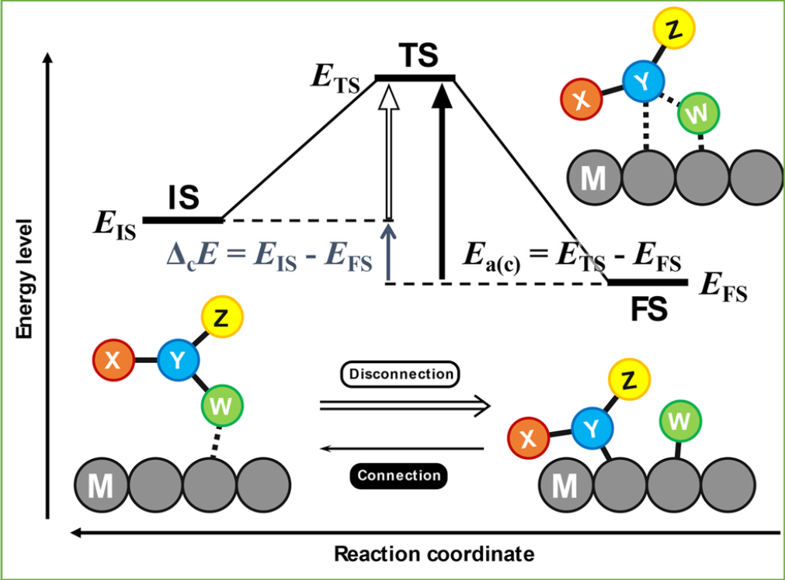
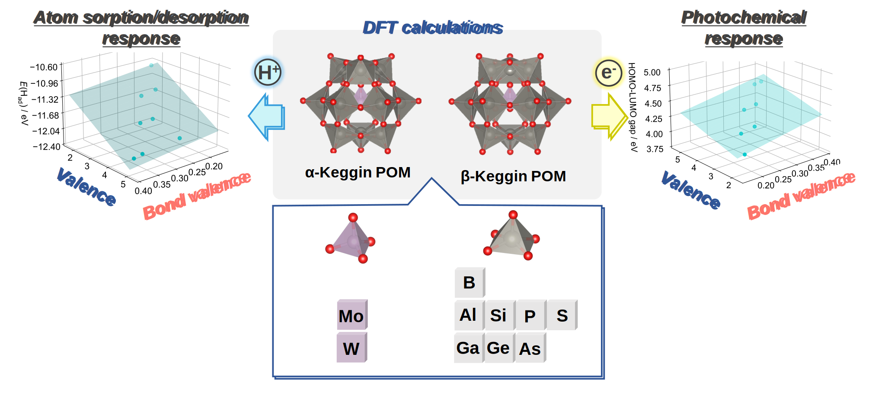
10. Factors Governing Protonation of Keggin-type Polyoxometalates: Influence of Core Structure in Clusters,
H. Sampei, H. Akiyama, K. Saegusa, M. Yamaguchi, S. Ogo, H. Nakai, T. Ueda*, and Y. Sekine*, Dalton Transactions, 53, 8576–8583, 2024. DOI: 10.1039/D4DT00799A (back cover, open access)
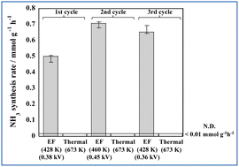
9. Air-stable iron phosphide catalyst for electric field-assisted low-temperature ammonia synthesis,
R. Maeda, H. Sampei, T. Tsuda, H. Akiyama, Y. Mizutani, T. Higo, H. Tsuneki, T. Mitsudome*, Y. Sekine*, Sustainable Energy Fuels, 8 (9), 2087–2093, 2024. DOI: 10.1039/D4SE00109E (open access)
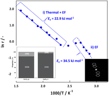
8. Effect of CeO2 support structure on the catalytic performance of ammonia synthesis in an electric field at low temperatures,
R. Maeda, H. Sampei, R. Nakayama, T. Higo, Y. Koshizuka, Y. Bando, T. Komanoya, Y. Nakahara, Y. Sekine*, RSC Advances, 14, 9869–9877, 2024. DOI: 10.1039/D4RA01457J (open access)
2023
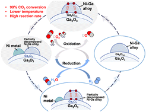
7. Equilibrium unconstrained low-temperature CO2 conversion on doped gallium oxides by chemical looping,
K. Kang, S. Kakihara, T. Higo, H. Sampei, K. Saegusa, Y. Sekine*, Chemical Communications, 59, 11061–11064, 2023. DOI: 10.1039/d3cc02399k (front cover, open access)
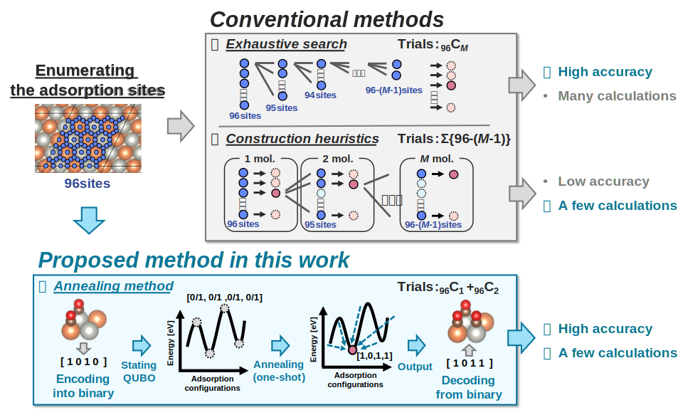
6. Quantum Annealing Boosts Prediction of Multimolecular Adsorption on Solid Surfaces Avoiding Combinatorial Explosion,
H. Sampei, K. Saegusa, K. Chishima, T. Higo, S. Tanaka, Y. Yayama, M. Nakamura, K. Kimura, and Y. Sekine*, JACS Au, 3, 4, 991–996, 2023. DOI: 10.1021/jacsau.3c00018 (back cover, open access)
2022
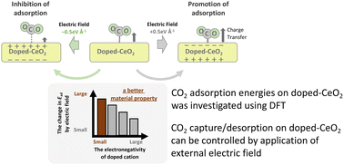
5. Theoretical investigation of selective CO2 capture and desorption controlled by the electric field, K. Saegusa, K. Chishima, H. Sampei, K. Ito, K. Murakami, J. G. Seo, and Y. Sekine*, Physical Chemistry Chemical Physics, 24, 28141–28149, 2022. DOI: 10.1039/D2CP04108A (back cover, open access)
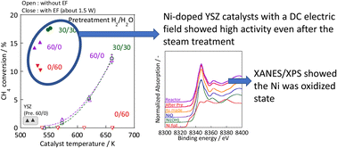
4. Evaluating the effects of OH-groups on the Ni surface on low-temperature steam reforming in an electric field,
K. Nagakawa, H. Sampei, A. Takahashi, J. Sasaki, T. Higo, N. Mori, H. Sato, and Y. Sekine*, RSC Advances, 12, 25565–25569, 2022. DOI: 10.1039/D2RA04974K (open access)
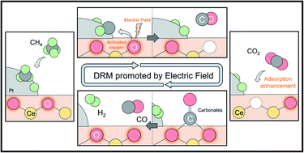
3. Elucidation of the reaction mechanism on dry reforming of methane in an electric field by in situ DRIFTs,
N. Nakano, M. Torimoto, H. Sampei, R. Yamashita, R. Yamano, K. Saegusa, A. Motomura, K. Nagakawa, H. Tsuneki, S. Ogo, and Y. Sekine*, RSC Advances, 12, 9036–9043, 2022. DOI: 10.1039/D2RA00402J (open access)
2021
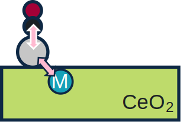
2. Manipulation of CO adsorption over Me1/CeO2 by heterocation doping: Key roles of single-atom adsorption energy,
K. Murakami, Y. Mizutani, H. Sampei, A. Ishikawa, and Y. Sekine*, The Journal of Chemical Physics, 154, 164705, 2021. DOI: 10.1063/5.0049582
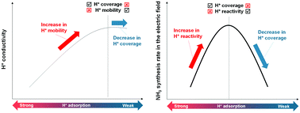
1. Theoretical prediction by DFT and experimental observation of heterocation-doping effects on hydrogen adsorption and migration over the CeO2(111) surface,
K. Murakami, Y. Mizutani, H. Sampei, A. Ishikawa, Y. Tanaka, S. Hayashi, S. Doi, T. Higo, H. Tsuneki, H. Nakai, and Y. Sekine*, Physical Chemistry Chemical Physics, 23, 4509–4516, 2021. DOI: 10.1039/D0CP05752E (back cover, open access)